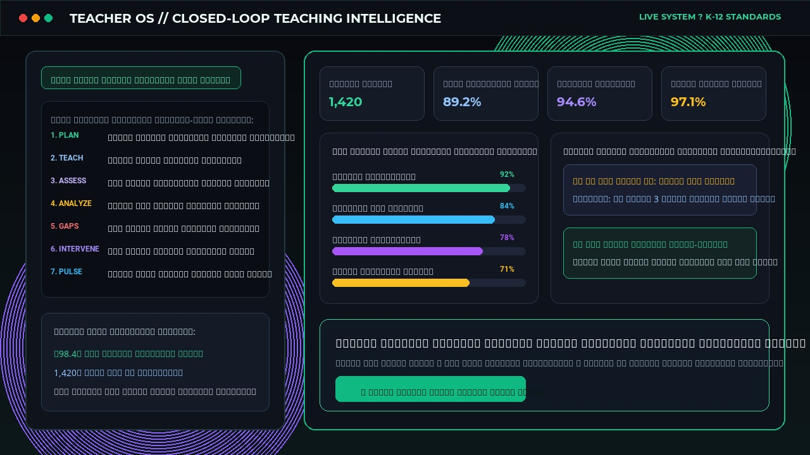
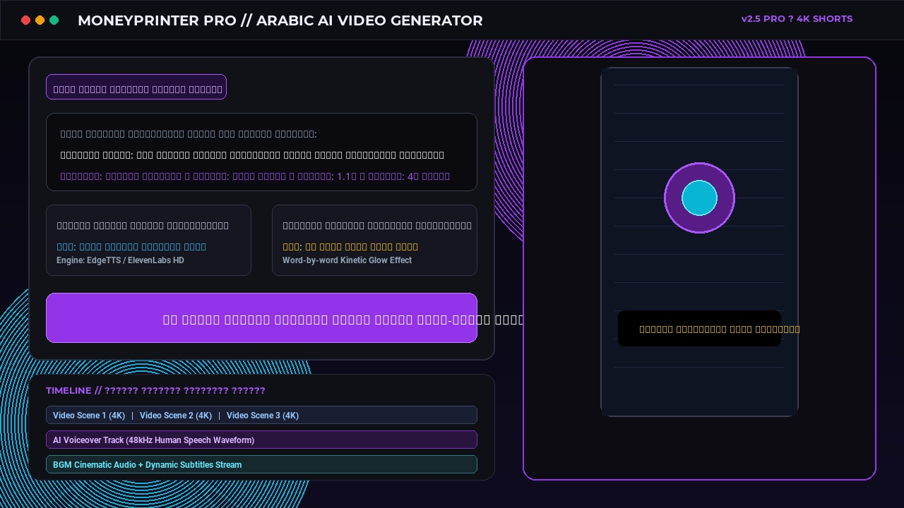
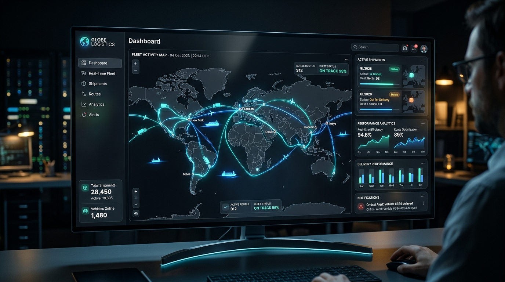
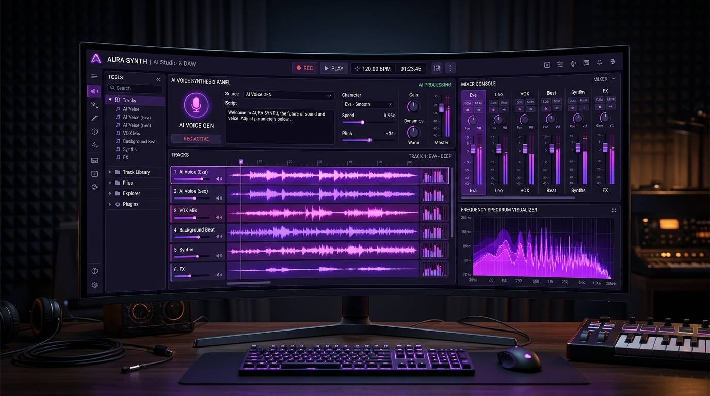
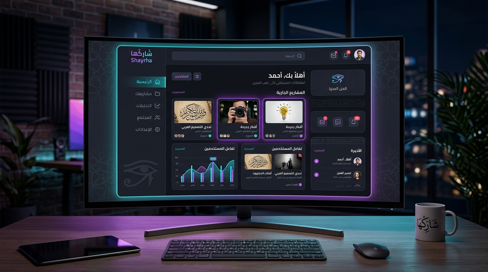
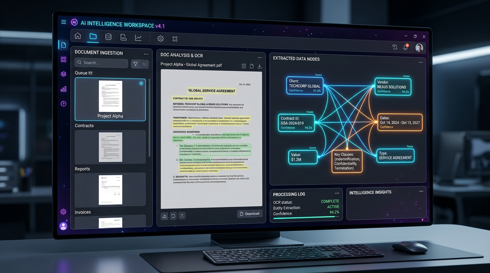
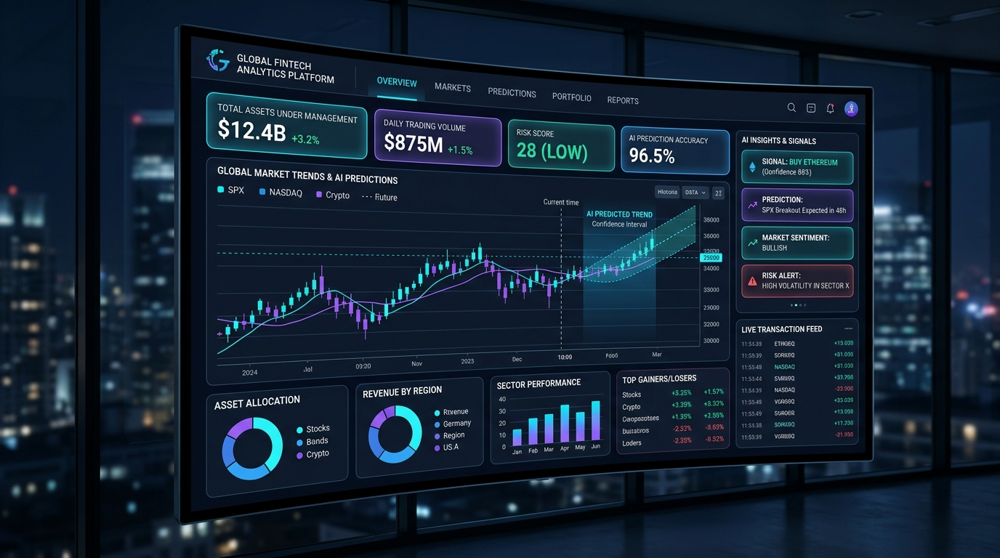
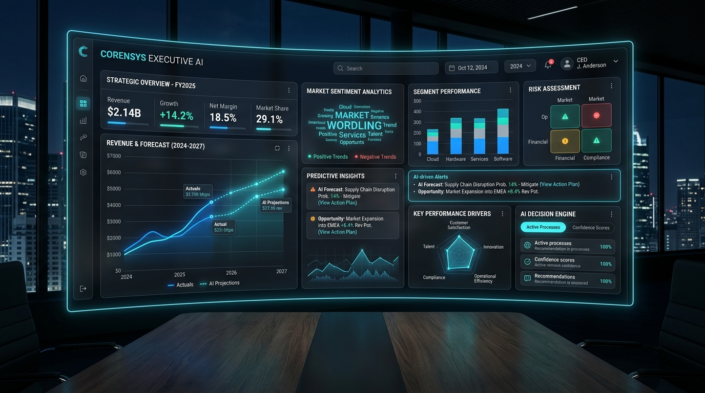

أحوّل التعقيد إلى أنظمة ذكية فائقة.
مسيرة شغف في هندسة الذكاء الاصطناعي والأتمتة، أُسخر فيها التقنية لبناء أنظمة ذكية تعكس طموحي وشغفي بالابتكار؛ من أتمتة سير العمل والنماذج المالية، إلى البنية السحابية وأنظمة الإنتاج الرقمي — أُوثق هنا رحلتي كمهندس يعشق تحويل التعقيد إلى إبداع تقني، وأرحب دوماً بتقديم أي استشارات مجانية.
عبده علي موسى
Verified Proهندسة وتكامل خوارزميات الذكاء الاصطناعي للمؤسسات
شغف بناء المنظومات وإتقان الحلول الذكية
توثيق لمسيرتي وخبراتي في تحويل الأفكار والتحديات إلى منظومات ذكية ومستقرة، وبناء معماريات برمجية تعكس دقة التنفيذ والابتكار.
أتمتة الأعمال بالذكاء الاصطناعي المستقل (Autonomous AI)
تصميم وبناء مسارات عمل ذكية ذاتية القيادة (AI Agents) لتنفيذ المهام المعقدة، وخدمة العملاء، وتحليل البيانات بأعلى مستويات الدقة والسرعة.
الهندسة المالية والنمذجة الاستراتيجية (FinTech & BI)
تصميم النماذج المحاسبية ولوحات التحكم التفاعلية (Power BI Dashboards) لتوفير رؤى مالية فورية وتوقعات التدفقات النقدية لدعم اتخاذ القرارات الصائبة.
البنية التحتية السحابية وتكامل البرمجيات (Cloud & APIs)
ربط الأنظمة السحابية والـ APIs المختلفة، وبناء منصات ويب متقدمة تتسم بالسرعة الفائقة والأمان الموثوق لدعم نمو وتوسع أعمالكم بلا انقطاع.
استوديوهات الصوت التوليدي وصناعة المحتوى الرقمي
بناء محركات توليد الفويس أوفر البشري والموسيقى التصويرية بالذكاء الاصطناعي، وإدارة شبكات المحتوى الرقمي لخدمة ملايين المشاهدين.
تطبيقات ومنصات حية تقود العمليات في الواقع
نماذج لمنصات وتطبيقات برمجية حية متكاملة تخدم آلاف العمليات اليومية بكفاءة مطلقة ودقة متناهية.

نظام تشغيل المعلم الذكي والمنصة التعليمية المتكاملة (Teacher OS)
المنظومة التعليمية الرقمية الشاملة لتمكين المعلمين والمراكز التعليمية؛ تعتمد فلسفة التدريس مغلق الحلقة (Closed-Loop Engine)؛ تحضير الدروس الذكي بالذكاء الاصطناعي، بنك أسئلة معياري، التصحيح الآلي الفوري، رصد فجوات الاستيعاب (Concept Mastery Signals)، والتدخل العلاجي المخصص مع نافذة متابعة حية لأولياء الأمور.

عملاق صناعة المحتوى والفيديوهات القصيرة بالذكاء الاصطناعي (MoneyPrinter Pro)
المنظومة الاحترافية الأقوى لتوليد الفيديوهات القصيرة (Shorts, Reels, TikTok) بالذكاء الاصطناعي حصراً باللغة العربية؛ كتابة السيناريو التوليدي، اختيار المشاهد البصرية بدقة 4K، دمج التعليق الصوتي البشري المتنوع، الموسيقى التصويرية، وتوليد الترجمة الحركية الملونة آلياً للنشر الفوري.

منظومة إدارة اللوجستيات وعمليات الشحن والأسطول والمتجر الذكي
تطبيق متكامل لإدارة سلاسل الإمداد، وتتبع الشحنات والأسطول والمناديب في الوقت الفعلي عبر الخريطة، مع ربط مباشر مع المتجر والمخازن، ولوحة تحكم مالية دقيقة لحسابات التحصيل اليومي وهوامش الأرباح.

استوديو الذكاء الاصطناعي الصوتي والموسيقي المتكامل
منصة برمجية متطورة لتوليد الفويس أوفر (Voiceover) الواقعي البشري بمختلف اللهجات، وتأليف وهندسة الموسيقى والمؤثرات الصوتية التوليدية بدقة استوديو 48kHz بمعالجة سحابية فورية.

منصة شيرها (Shayrha) - نبض التواصل الرقمي المصري
تحفة برمجية تجسد الجيل الجديد من منصات التواصل الاجتماعي؛ تم هندستها بالكامل لتكون منصة تفاعلية متطورة للمستخدم العربي. تجمع المنصة بين جمالية التصميم وقوة الأداء لتتيح للمستخدمين مشاركة الأفكار، والتواصل المباشر، وبناء مجتمعات رقمية نابضة بالحياة، مع لوحة تحكم ذكية وصلاحيات أمان صارمة.

منظومة المتجر الإلكتروني الذكية
منصة بيع رقمية تم بناؤها من الصفر لتكون محركاً جباراً للمبيعات؛ لا تقتصر على عرض المنتجات فحسب، بل تدير دورة المبيعات بالكامل بدءاً من بوابات الدفع اللحظية وصولاً إلى إدارة المخزون وتحليل السلوك الشرائي للعملاء، لتقديم تجربة تسوق لا تُنسى.

منصة NovaCraft (من الفكرة إلى الإبداع للانتشار)
مشروع طموح وثوري في عالم الـ SaaS (No-Code Builder). يتيح لأي شخص تحويل فكرته إلى تطبيق أو موقع إلكتروني بالكامل من خلال الأوامر الصوتية أو النصوص البسيطة فقط؛ حيث يقوم محرك الذكاء الاصطناعي بتحليل المدخلات وتوليد الواجهات، مع توفير محرر بصري شامل للتعديل اليدوي.

منظومة OpenMontage لإنتاج الفيديو الذكي
منظومة توليدية ضخمة مصممة لأتمتة صناعة محتوى اليوتيوب (Shorts/Reels) بدقة سينمائية؛ تدعم توليد مقاطع ترويجية وتسجيلات وثائقية (مثل فيديوهات كائنات الأعماق لقناة Fathom X) من مجرد سطر نصي، مع ربط مباشر بحسابات السوشيال ميديا للنشر الآلي والذاتي.
نماذج ذكية وحلول برمجية متخصصة
معرض لأحدث النماذج البرمجية، محركات الأتمتة المالية، وأدوات تحليل البيانات الذكية المصممة لتمكين المؤسسات.

نظام الأتمتة والنمذجة المالية التفاعلية
محرك مالي متكامل لتحليل التدفقات النقدية، تقييم المخاطر، وبناء سيناريوهات الموازنات التقديرية بالذكاء الاصطناعي مع لوحات تحكم تفاعلية فورية.

منظومة معالجة المستندات واستخراج البيانات الذكي
أداة ذكية لاستخراج وهيكلة البيانات من الفواتير والعقود والملفات بصيغ PDF/صور وربطها بقواعد البيانات آلياً دون أي تدخل بشري.

مساعد القرار الاستراتيجي للمؤسسات
منصة قيادة وتحليلات تنبؤية تجمع بيانات المبيعات والتسويق والتشغيل وتقدم توصيات استراتيجية مدعومة بالبيانات للنمو السريع.
شبكة القنوات الرقمية والمحتوى الوثائقي (Shorts)
إدارة وإنتاج محتوى متكامل عبر 4 قنوات دولية تعتمد على الذكاء الاصطناعي التوليدي لسرد قصص التاريخ والاقتصاد والتقنية واستكشافات الأعماق لملايين المشاهدين.
مستعد لتحويل فكرتك إلى منظومة ذكية خارقة ومضاعفة كفاءة أعمالك؟
نبني حلولاً رقمية وأنظمة ذكاء اصطناعي تفوق التوقعات، تمنح مشروعك أسبقية تنافسية مطلقة وكفاءة تشغيلية لا تضاهى. دعنا نناقش أهدافك ونرسم معاً معمارية النظام القادم من خلال جلسة استشارية أولية مجانية ومباشرة.